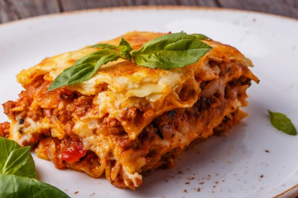

Lasagna

Description
lasagna are made with cheese and meat, it's an italian dish iirc
Ingredients pour 8 personnes
- 125g de beurre
- 100g de farine
- poivre
- sel
- 70g de fromage rape
- thym
- un peu de muscade rapee
- 2 feuilles de laurier
- 2 oignons
- 2 carottes
- sauce tomate
Preparation
- Faire revenir gousses hachées d'ail et les oignons émincés dans un peu d'huile d'olive.
- Ajouter la carotte et la branche de céleri hachée puis la viande et faire revenir le tout.
- Ajouter la purée de tomates, l'eau et les herbes. Saler, poivrer, puis laisser mijoter à feu doux 45 minutes.
- Préparer la béchamel : faire fondre 100 g de beurre.
- Hors du feu, ajouter la farine d'un coup.
- Remettre sur le feu et remuer avec un fouet jusqu'à l'obtention d'un mélange bien lisse.
- Ajouter le lait peu à peu.
- Remuer sans cesse, jusqu'à ce que le mélange s'épaississe.
- Ensuite, parfumer avec la muscade, saler, poivrer. Laisser cuire environ 5 minutes, à feu très doux, en remuant. Réserver.
- Préchauffer le four à 200°C (thermostat 6-7). Huiler le plat à lasagnes. Poser une fine couche de béchamel puis des feuilles de lasagnes, de la bolognaise, de la béchamel et du parmesan. Répéter l'opération 3 fois de suite.
- Sur la dernière couche de lasagnes, ne mettre que de la béchamel et recouvrir de fromage râpé. Parsemer quelques noisettes de beurre.
- Enfourner pour environ 25 minutes de cuisson.
- Déguster